Artesanato · Barro & Cerâmica · Peças Únicas
Esculturas, animais e vasos de barro feitos à mão
Nossa História
A Thê-lie Cerâmico nasceu das mãos e do coração de uma artesã apaixonada pela argila. Cada peça é criada com dedicação, paciência e uma sensibilidade única para capturar a beleza do barro em suas formas mais naturais e expressivas.
Trabalhamos com esculturas autorais, animais decorativos cheios de personalidade e vasos de barro que carregam a essência da terra em cada curva. Da modelagem à finalização, todo o processo acontece de forma artesanal, em nosso ateliê em Coxim, MS.
Portfólio
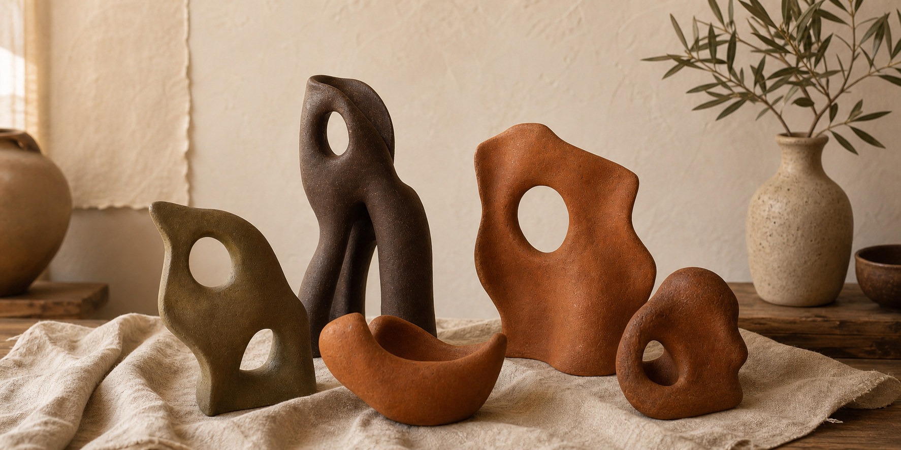
Escultura
Formas autorais em barro, com textura fosca e marcas sutis da modelagem manual.
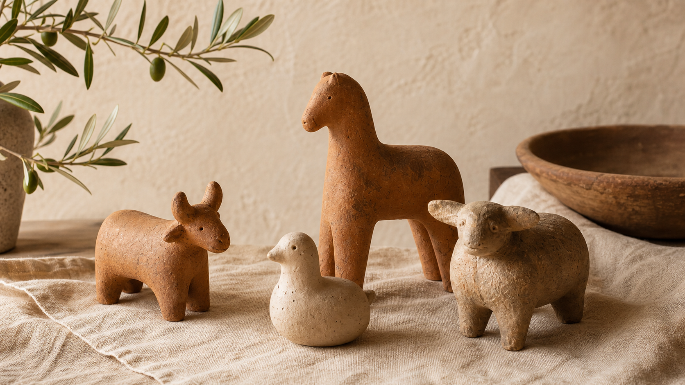
Animal de Barro
Pequenos animais decorativos, feitos um a um, com expressão serena e presença afetiva.
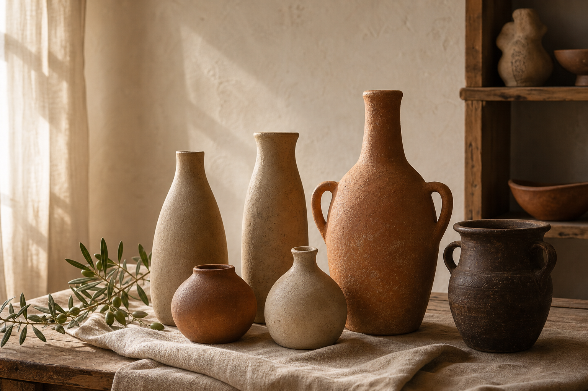
Vaso
Vasos de barro com silhuetas orgânicas, variações de queima e acabamento natural.
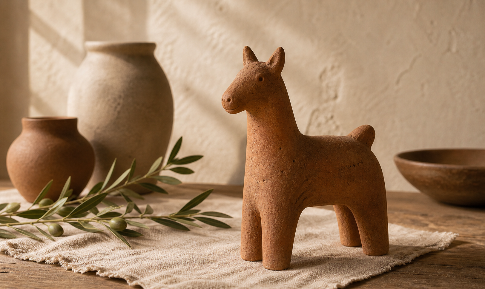
Animal de Barro
Figura decorativa inspirada nos animais do interior, simples, acolhedora e feita à mão.
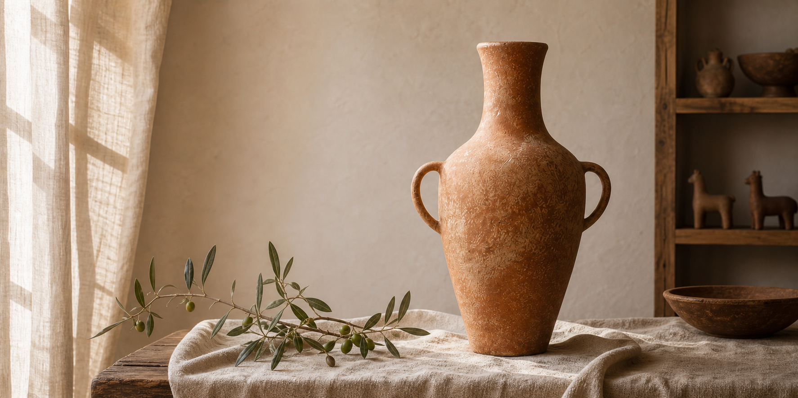
Vaso
Peça de presença elegante, em terracota fosca, pensada para composições naturais.
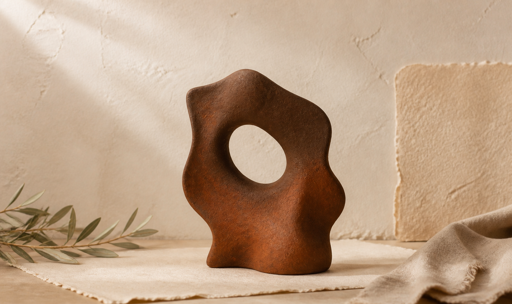
Escultura
Escultura abstrata com abertura central, bordas orgânicas e acabamento artesanal.
Como Fazemos
Do barro bruto à peça que vive em sua casa —
cada
etapa é realizada com presença e cuidado.
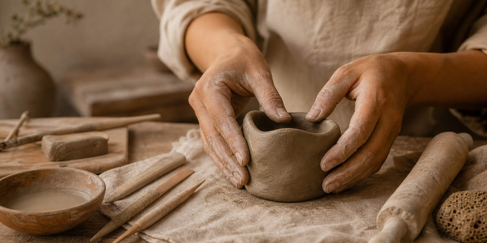
O barro é preparado e trabalhado com as mãos, ganhando forma por toque, presença e intuição.
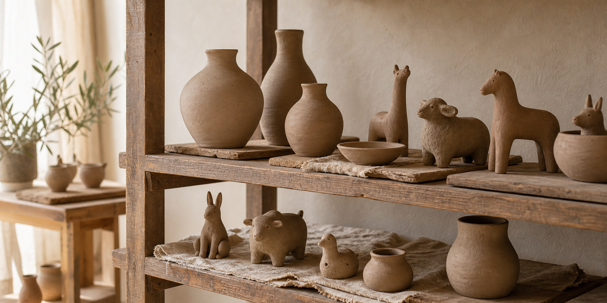
A peça descansa ao natural, respirando. O tempo é parte do processo, sem pressa.
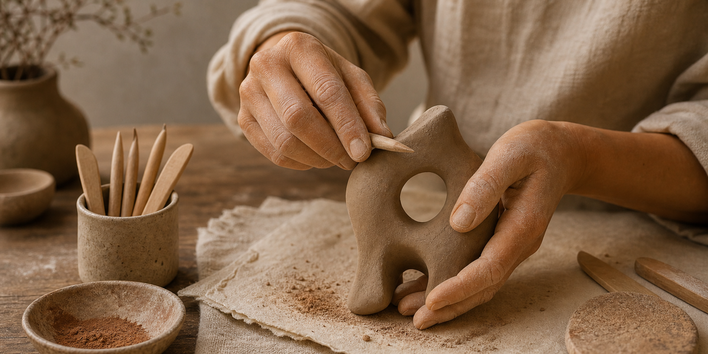
Lixamento, alisamento e refinamento da superfície. Cada detalhe é notado e cuidado.
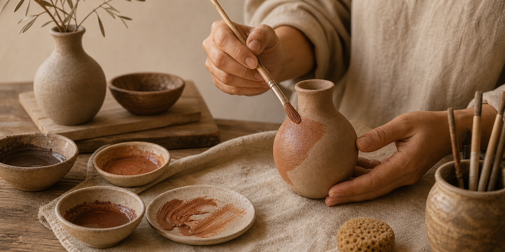
Pigmentos naturais, engobes e finalizações artesanais dão vida à cor e à personalidade da peça.
Personalização
Cada encomenda é uma conversa entre artesã e cliente.
Trazemos à vida a peça que você imagina —
com a alma e o cuidado da Thê-lie.
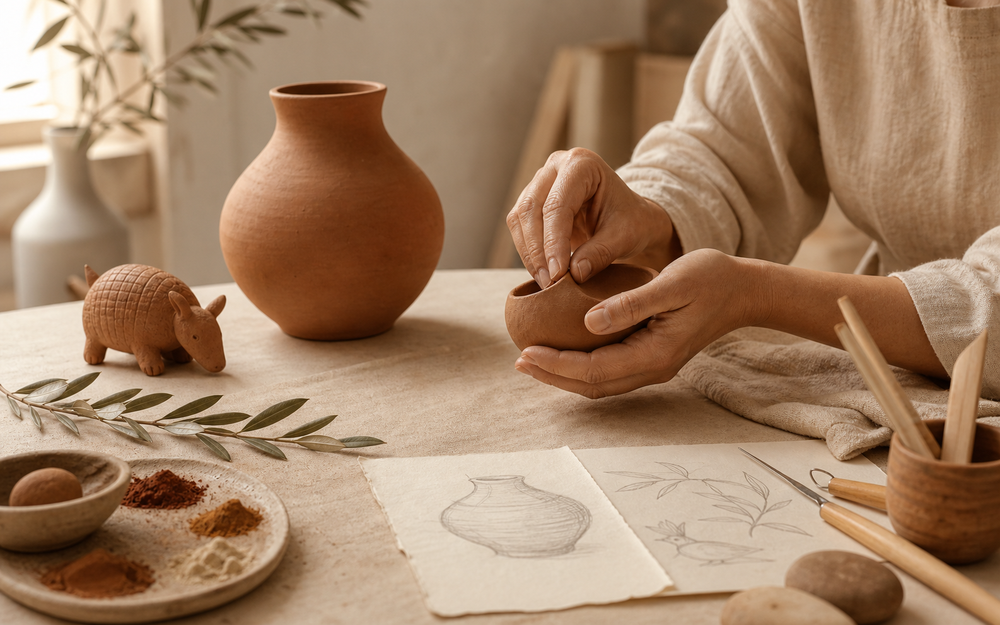
Fale Conosco
Estamos em Coxim, no coração do Mato Grosso do Sul,
mas nossas peças viajam para todo o Brasil.